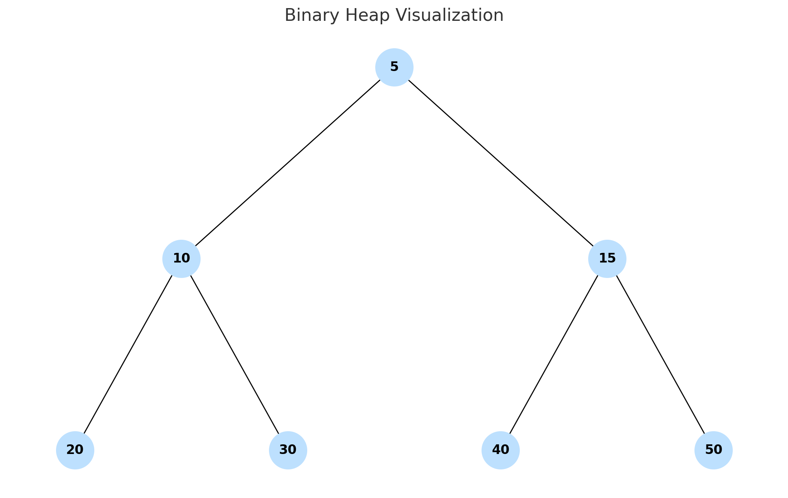

A Binary Heap is a type of complete binary tree that maintains a special ordering: either a min-heap (parents are smaller than children) or a max-heap (parents are larger).
Binary heaps are commonly used to implement Priority Queues, an essential structure for handling tasks like CPU scheduling, Dijkstra's algorithm, and heapsort.
Instead of tree nodes, heaps are often stored in arrays. For index i:
2i + 12i + 2floor((i - 1) / 2)insert(x) → Add to end, bubble up to fix heapextractMin()/extractMax() → Remove top, bubble down to restore orderbuildHeap(arr) → Turn unordered array into heapTry inserting and extracting values from the visual tool. Notice how nodes "bubble up" or "sink down" depending on their value. This keeps the heap in proper order!
Binary heaps are easy to build and fast to use for managing ordered elements. Mastering them will help you with sorting, graph algorithms, and real-time task management.